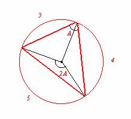

86.-
| Los vértices de un triángulo ABC dividen a la circunferencia circunscrita en tres arcos, que están en relación 3:4:5. Construye el triángulo con Cabri. ¿Cuánto miden los ángulos del triángulo? |
Arriero, C. y García I. (2000): Descubrir la Geometría del entorno con Cabri. Narcea-MEC. Madrid. (pág 48)
Solución de Alicia y Maite Peña Alcaraz, alumnas del Colegio Porta Celi de Sevilla:
Cojamos la circunferencia de longitud 12 cm. Entonces, sabemos que si los arcos están en relación 3:4:5, los ángulos también estarán en relación 3:4:5. Por lo tanto el ángulo que corresponde al arco 3 es de 90º, al de 4, 120º y al de 5, 150º.
Este ángulo es el ángulo central. Por lo tanto el ángulo interior será la mitad (propiedades del arco capaz).
Por lo tanto los ángulos del triángulo serán 90/2=45º, 120/2=60º y 150/2=75º.
